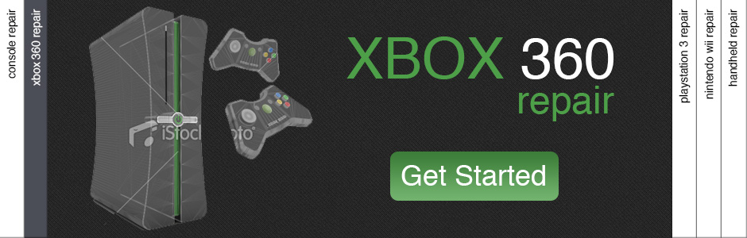

Get Gaming Orlando
Orlando's experts in PS3, XBox, Wii, and PSP Repair

Who are we?
Servicing Orlando and it’s surrounding areas, Get Gaming Orlando is the local expert in PS3, XBox, Wii, and PSP Repair.
Our Services
We offer services in PS3, XBox, Wii, and PSP Repair. We also repair broken screens on Laptop Computers as well.
Service Request
Stop by our store or give us a call to get a free repair quote today! Visit our contact page to find out how to contact us.